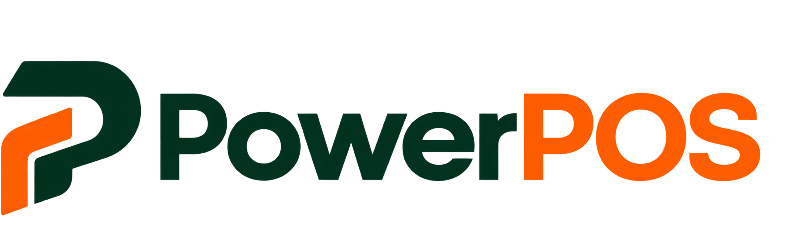
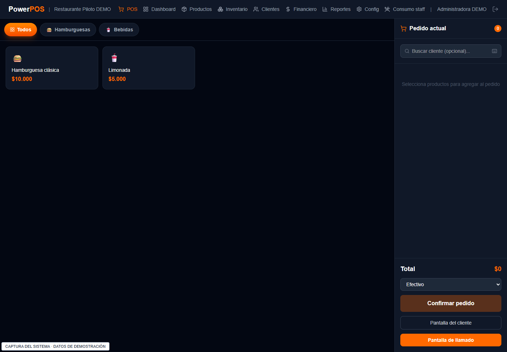

Cada venta,
bien registrada.
Selecciona productos, organiza la venta y registra el medio de pago desde el punto de venta.
Conocer el punto de venta ↗
PARA TU NEGOCIOAgenda una demoMENOS ENREDOS. MÁS CONTROL.
De la primera venta al cierre de caja. Organiza tus productos, registra tus ventas y consulta tus reportes en un solo sistema.
Demo personalizada · Atención directa · Sin compromiso

Más claridad para ti.
Más fluidez para tu equipo.
EL CONTROL SE NOTA EN EL DÍA A DÍA
Un punto de venta para tu negocio. Revisamos contigo las funciones que necesitas según tu sector y tu forma de trabajar.
Selecciona productos, organiza la venta y registra el medio de pago desde el punto de venta.
Conocer el punto de venta ↗Organiza tus productos por categorías y consulta sus precios para que tu equipo encuentre lo que necesita al vender.
Explorar el catálogo ↗Revisa ventas, movimientos y reportes para entender cómo va la operación de tu negocio.
Explorar los reportes ↗ASÍ SE VE POWERPOS
Explora pantallas reales con un catálogo de ejemplo de restaurante.
En la demo revisamos el uso para tu tipo de negocio.
Consulta el catálogo, personaliza productos y organiza el pedido antes de confirmar la venta.
EMPECEMOS POR TU NEGOCIO
Queremos entender cómo trabajas y mostrarte dónde encaja PowerPOS en tu operación.
Hablemos de tu negocio ↗Conversamos sobre tu negocio, tu equipo y los procesos que quieres organizar.
Recorremos ventas, catálogo y administración. Si tu negocio lo necesita, también te mostramos la vista de cocina.
Acordamos las funciones, la configuración y los pasos de una puesta en marcha gradual.
Un contacto claro para conocer el sistema y resolver tus preguntas.
Funciones y condiciones definidas antes de iniciar la implementación.
Manuales y procedimientos para acompañar el aprendizaje del sistema.
ANTES DE DAR EL PASO
PowerPOS se ofrece a restaurantes, bares, supermercados y otros comercios que necesitan un sistema de punto de venta. En la demo revisamos tus procesos y las funciones disponibles para definir el alcance adecuado. La vista de cocina está orientada a negocios gastronómicos.
La propuesta se define según el alcance y las necesidades de tu negocio. Escríbenos para conocer el sistema y solicitar una cotización con las funciones y condiciones detalladas.
Sí. Puedes solicitar una demostración de sus funciones actuales. PowerPOS está en etapa de preparación de su primer piloto; la disponibilidad y fecha de implementación se acuerdan contigo.
La versión actual no emite facturas electrónicas. Si tu negocio la requiere, debemos revisar ese requisito antes de acordar la implementación.
Escríbenos por WhatsApp o correo con el nombre de tu negocio y lo que quieres mejorar. Coordinaremos una demostración y revisaremos juntos el alcance.
TU SIGUIENTE PASO
Cuéntanos sobre tu negocio. Te mostramos PowerPOS.